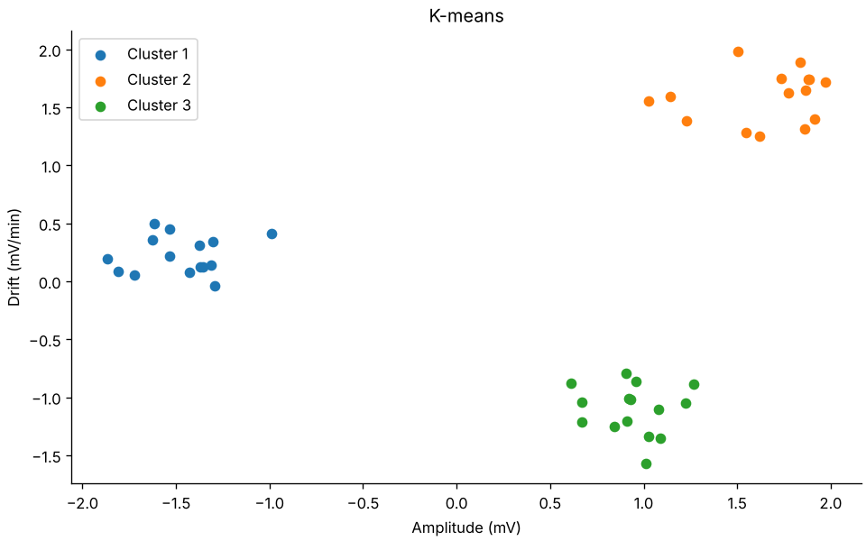

Trama guide
From the question to a result you can report.
Four guides for people who work with experimental measurements: choose the analysis, run it in Trama, read the numbers and write the methods. Every example has synthetic data and a project that reopens.
Try: number of clusters standard curve several conditions svg

Pilot chapter · StatisticsChoose the number of clusters with K-means45 synthetic signals, three solutions side by side, one edge case on units of measurement.How a chapter is built
- Questionfrom your work
- Whenand which assumptions matter
- DataCSV and .alab project
- In Tramathe real commands
- Resultnumbers and an edge case
- Reportsentence, version, sources
Ready chapters
- Compare several conditions with ANOVA · Statistics
- Choose the number of clusters with K-means · Statistics
- Read concentrations off a standard curve · Curves and calibration
- Create a calculated column · Data and formulas
- Export a vector figure · Graphs and reports
36 chapters in four guides · 5 ready · 6 in the next batch
No chapter for “”. Try a method (ANOVA, Cox), what you want to do (compare groups, export a figure) or a shorter word.
Statistics
Choosing and interpreting the method, from group comparisons to multivariable and survival analyses.
15 chapters · 2 ready
- Describe a sampleNext batchExample: Times and intensities with one missing value
- Interpret a confidence intervalPlanned · batch 4Example: Two samples with the same mean and different spread
- Compare independent and paired groupsNext batchExample: Before and after on the same instruments
- Compare with ranksPlanned · batch 3Example: Ordinal signals with ties and missing values
- Compare several conditions with ANOVAReady · checked on 0.95.0Example: Control and two treatments with replicates
- Separate effects and interactionsPlanned · batch 4Example: Balanced and unbalanced 2×3 design
- Analyse repeated measuresPlanned · batch 4Example: Four observations per unit
- Interpret counts and proportionsPlanned · batch 4Example: Categories observed in two conditions
- Assess a correlationPlanned · batch 3Example: Nearly linear association and an edge case
- Read PCA scores and loadingsPlanned · batch 4Example: Three correlated measures on different scales
- Choose the number of clusters with K-meansReady · checked on 0.95.0Example: 45 synthetic signals with amplitude and drift
- Read a dendrogramPlanned · batch 4Example: Samples with known distances
- Read a survival curvePlanned · batch 3Example: Synthetic times with censoring
- Interpret a Cox modelPlanned · batch 4Example: Synthetic times with two covariates
- Plan sample size and powerPlanned · batch 4Example: Target difference and assumed spread
Curves and calibration
From choosing the equation to checking the fit and predicting with uncertainty.
9 chapters · 1 ready
- Fit a line and check the residualsPlanned · batch 4Example: Reference measurements along a scale
- Fit a nonlinear curvePlanned · batch 3Example: Synthetic growth curve with a plateau
- Use weights and check the fitNext batchExample: Measurements with known non-constant spread
- Understand the effect of outliersPlanned · batch 4Example: Curve with one synthetic extreme point
- Define your own equationPlanned · batch 4Example: Two-parameter function
- Share parameters across seriesPlanned · batch 4Example: Two series with a shared parameter
- Compare alternative modelsPlanned · batch 3Example: Linear and quadratic models on the same data
- Read concentrations off a standard curveReady · checked on 0.95.0Example: Synthetic standards and unknown samples
- Choose between mean and prediction intervalsNext batchExample: New measurement on a noisy curve
Data and formulas
Sheets, column types, missing values, transformations and projects that reopen unchanged.
6 chapters · 1 ready
- Prepare and import a sheetPlanned · batch 3Example: CSV with text headers and decimals
- Handle empty and excluded cellsNext batchExample: A series with gaps and exclusions
- Create a calculated columnReady · checked on 0.95.0Example: Normalise two measurements in the same row
- Filter and transform valuesPlanned · batch 4Example: Multivariable series with rows to filter
- Link analyses and result sheetsPlanned · batch 4Example: Transformation followed by regression
- Save and reopen a projectPlanned · batch 4Example: Two sheets with analyses and a graph
Graphs and reports
Which marks to read, how to compose panels, how to export figures and tables.
6 chapters · 1 ready
- Choose the graph for the resultPlanned · batch 4Example: Distributions of two series
- Show uncertainty in a figureNext batchExample: XY series with errors available
- Make a heat map readablePlanned · batch 4Example: Synthetic matrix of measurements
- Format axes and annotationsPlanned · batch 4Example: Scatter with a reference line
- Compose a multi-panel layoutPlanned · batch 4Example: Curve and residuals in the same project
- Export a vector figureReady · checked on 0.95.0Example: Layout with several graphs
How the other chapters arrive
Chapters are published in batches. Each one goes out only after its numbers have been redone in the stated version, with synthetic data, an .alab project that reopens, real screenshots and primary sources.
| Batch | Chapters | Titles |
|---|---|---|
| Batch 1 · published | 5 | Compare several conditions with ANOVA, Choose the number of clusters with K-means, Read concentrations off a standard curve, Create a calculated column, Export a vector figure |
| Batch 2 · next | 6 | Describe a sample, Compare independent and paired groups, Use weights and check the fit, Choose between mean and prediction intervals, Handle empty and excluded cells, Show uncertainty in a figure |
| Batch 3 | 6 | Compare with ranks, Assess a correlation, Read a survival curve, Fit a nonlinear curve, Compare alternative models, Prepare and import a sheet |
| Batch 4 | 19 | Interpret a confidence interval, Separate effects and interactions, Analyse repeated measures, Interpret counts and proportions, Read PCA scores and loadings, Read a dendrogram, Interpret a Cox model, Plan sample size and power, Fit a line and check the residuals, Understand the effect of outliers, Define your own equation, Share parameters across series, Filter and transform values, Link analyses and result sheets, Save and reopen a project, Choose the graph for the result, Make a heat map readable, Format axes and annotations, Compose a multi-panel layout |